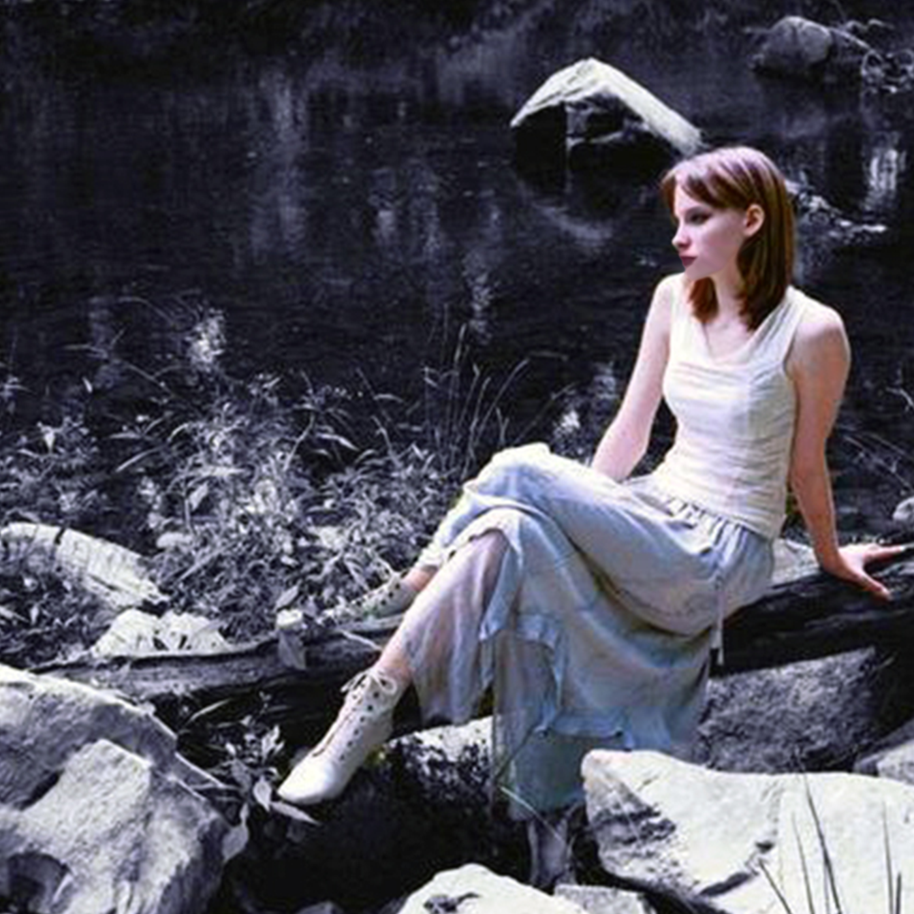

| BIO |
Sage Delio is an American composer, fine artist, computer scientist, video game developer, and voice actor best known for her eclectic musical recordings and surreal portraiture works, She was born on October 30th 1985 in Philadelphia, Pennsylvania.
Sage started painting at the age of 4, with her first solo exhibition by age 10. Sage works mainly in the medium of inks and seeks to expand what it means to be a new media artist, mixing traditional painting with computer simulated watercolors, oils, and acrylics. Her most recent work is focused on algorithms and mathematics. She says, “I tend to take the point of view of an observer, with subjects being what I see or dream.
| EXHIBITIONS |
2021 Artist Choice VI Exhibition, Camelback Gallery (Online) *
2021 “CityScapes” Art Exhibition, LST Gallery (Online) *
2020 Ludum Dare 46 (Online) *
2019 Ludum Dare 45 (Online) *
2008 Annual Art Show, Harcum College (Bryn Mawr, Pa)
2006 Annual Art Show, Harcum College (Bryn Mawr, Pa)
2003 Annual Art Show, DEHS (Lionville, Pa) *
1996 Annual Art Show, SCES (Lionville, Pa)
* Award Winner
| AWARDS |
2021: Silver Award — Woman in Dress
2021: Special Recognition Award for Outstanding Art — City of Smog
2020: Top 3% in the "Theme" category at Ludum Dare 46 — VITAL 2020
2019: Top 8% for "Innovation" at Ludum Dare 45 — Return To Nothing
2003: Honorable Mention DEHS Annual Art Show — Cannot Resist
| MUSIC |
Her music is recorded under Sage Delio and other various projects, spanning a wide variety of genres. You can find more information from Siphon Records (siphonrecords.com).
Sage is based in Philadelphia, Pennsylvania.